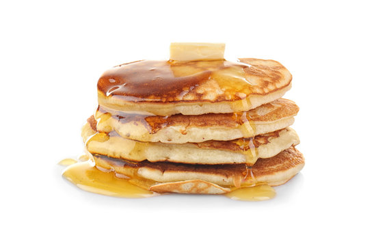

From Scratch Pancakes
Home

Pancakes made from scratch require a bit more time than their boxmade equivalent, but are well worth
the wait. An additional 15 minutes yields an end result that is, seemingly impossibly, miles ahead of their box mix brethern.
Manufacturers have to make compromises to an ideal recipe in order to accomodate a range of users - most people won't want to add an egg, or milk, or butter or oil.
As such, boxed mix is made to suit a variety of kitchens and needs, and to taste "prety good", regardless of what you do.
A true pancake mix could be boxed, but would likely not sell well as it would require consumers to add eggs, milk, and fat.
One last note - be sure that your baking powder is fresh. It loses potency a few months after opening. Trust me on this, get some fresh baking powder,
and you will be blown away by the rise and fluffiness that this recipe achieves.
Dry Ingredients
Mix these together in a large or medium bowl.
- 2 cups AP Flour
- 1/4 cup sugar
- 3 1/2 teaspoons baking powder
- 3/4 tsp diamond crystal kosher salt, regular (not coarse)
Wet Ingredients - whisk until well combined in small bowl
- 2 large eggs
- 1/4 cup neutral oil or melted butter
- 1 1/3 cup whole milk, room temp
- 1/4 teaspoon vanilla extract
-
An initial note - pancakes are best enjoyed hot! You want these being eaten as soon as you can after they are done. To that end, do some prep work and thinking ahead. Firstly, have the table set with butter, syrup, glasses and beverages, far ahead of time. If serving coffee, have it already brewed and keeping warm. Using a giant skillet will help you make more at once if you are feeding multiple guests. If you don't have a giant skillet, have the other breakfast items on the table, and bring out the pancakes as they are finished so that your guests are eating fresh pancakes.
This is hugely important - no other breakfast item benefits from freshness as much as pancakes do.
If you are serving other items, plan for them to be done at the same time as the pancakes, or to have them already on the table beforehand. Baking bacon or sausage in the oven is a great way to
stage those items conveniently and to have everything hit the table at once. You can also keep them warm in the oven by setting it to ~200.
- Pour the mixed wet ingredients into the bowl of dry ingredients. Stir gently until loosely combined - you should still see a few lumps with a few streaks of flour. Let batter sit for 10 to 15 minutes before cooking!
-
Heat a nonstick skillet - the bigger, the more you can cook at once. Put a bit of oil on there, let it heat, and use a paper towel to wipe off any excess, leaving just a thin film.
-
Use a 1/4 cup to portion batter onto skillet - use a spoon or the back of the cup to gently spread batter into 4 inch rounds. Cook until bubbles start to appear and break, and edges are set.
Bottom should be golden brown after the flip - compare what the top looked like to what the bottom looks like to dial in your intuition for when it's ready.
-
Cook the second side for a couple minutes longer. Again, you are using your senses to guide you here. Compare the result to how long you cooked it and the visual information at the time of flipping to guide you as to whether you need to cook more or less.
-
Serve to the table as they become ready!